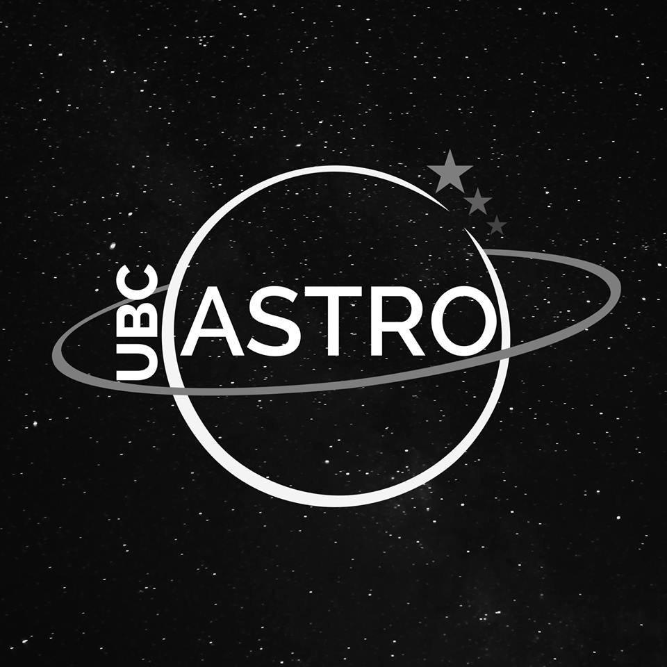

Committees and Leadership Roles
Exoclimes VII Conference -
Local Organizing Committee
ExoClimes is an international conference series devoted to understanding the climate and climate evolution of exoplanets. It began in 2010 at the University of Exeter, UK.
VP Communication
- Part of communication team on LOC to communicate news/updates of the conference to astro community. In charge of the Social Media.
VP ExoSLAM
- Organizing Committee for 2nd edition of ExoSLAM - a summer school/workshop geared toward young career researchers taking place just before the ExoClimes conference. ExoSLAM provides a great opportunity for early career researchers to gain valuable knowledge and meet others at a similar career stage! I was part of the first ever ExoSLAM in 2023
{kind=link}
VP Volunteer Coordinator
- I was 1 of 2 coordinators organizing and managing the ~20 volunteers that assisted us in ExoClimes VII!
Astronomy on Tap Organizing Committee
- After being a regular volunteer I joined the organizing committee in 2024. I act mainly as a Speaker Hunter, inviting astronomers to give talks and help them pick a topic and get ready to present!
Mentorship
Sean Collins
- I co-supervised a student working on the LTT 9779b JWST NIRSpec/G395H Phase Curve. I co-supervised him on modelling the planet's global energy balance and find the planet's day-to-nightheat recirculation efficiency and Bond albedo. This effort earned him second author on a paper published in the Astronomical Jouranl.
Outreach
Talks and Media
ExoSLAM II Mini-Lecture
- II was a lecturer during the ExoSLAM Summer School series geared toward early-career exoplanet researchers. My lecture was on emission spectroscopy and reflected light in exoplanets. I also helped organize this summer school and assisted with other tutorials!

Public AstroNight Talk and Q&A Panel:
Public talk and panel discussion on exoplanets for McGill AstroNight, the first event since COVID-19.
McGill Media - Experts: Canadian astronomers set to join Ariel space mission
Quoted in McGill Media for announcement of Canadian participation in ESA's ARIEL space telescope. My supervisor Dr. Nicolas Cowan became the Canadian PI, joining the mission for a space telescope to exclusively look at exoplanet atmospheres.
Volunteer Work
McGill Physics Outreach - McGill Space Explorers
- The McGill Space Explorers program visits local primary schools bringing along a different physics activity on each hour-long visit. Students get to know a physicist, while doing inquiry-based activities and experiments. I volunteer as a visiting Physicist!
Astronomy on Tap - Montreal Volunteer
- I am a regular volunteer at Astronomy on Tap - a free event providing talks and trivia in Astronomy topics at a local bar. If you attend, come say hi!
Montreal Eclipse Fair at McGill
- On April 8th, 2024 Montreal was in the path of a total Solar Eclipse. McGill hosted an Eclipse Fair to view the eclipse, an event attended by thousands. I acted as a Wandering Astronomer, answering all the public's questions about the nature of eclipses and space pheonmena!
24 Hours of Science - McGill Volunteer
- I participated as a volunteer in 24 Hours of Science presenting science based modules to kids across Montreal.
Clubs & Extra Curricular Activities
Adams Club
The Adams Club is a society of graduate students registered in the Department of Earth and Planetary Sciences at McGill University. I have been a part since I joined McGill and have taken on many roles:
Graduate Representative
- Representative of Graduate Students within the department, responsible for liason for admin, faculty within department.
Sustainability Committee
- On committee to find ways to make department more sustainable.
Grad Trip Organizer
- Organized camping and canoeing trip for 19 graduate students in the department for 2 nights.
Social Representative
- Organized and ran 15+ social events for graduate students in the department of Earth & Planetary Sciences
UBC Astronomy Club
Social Media Coordinator
- Managed social media of one of largest clubs at the University of British Columbia and assisted with organizing various events.
- Started a series called "Space Sundays" to share astronomy facts on Sunday, the series is still being used by the club to this day.
